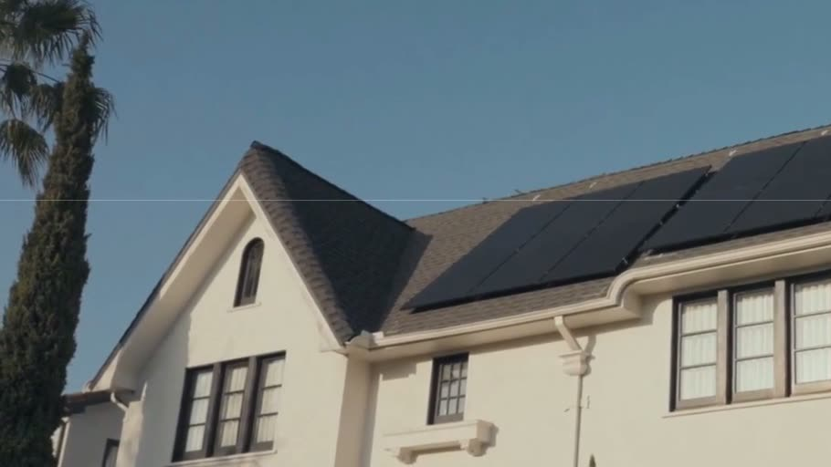

@Taylor Brooks What’s still holding up the agreement on this one?
Case study by Mike Battaglia, 2026
Ray at Daylight
In Daylight’s partner portal for solar projects, a lot of the questions people asked each other in Project Notes looked answerable from what the portal already had.
Our team had built the foundation of Ray, Daylight’s AI assistant. I led the product direction, interaction design and AI-assisted implementation that grew it into the portal’s AI concierge.
Try Ray Interactive demo · Sample data
Origination
Orchard House
142 Orchard Lane · DL-1042
OverviewDocumentsNotes
In progress
Document verification
Utility bill
Signed agreement
Title verification Needs review
Latest note
What’s holding this project up?
Alex Morgan · Just nowAsk RayBeta
Orchard House · DL-1042 · Origination
Ask about your projects…
Ray can make mistakes. Check important info.
01Daylight
A solar project changes hands a lot
Daylight brings solar and batteries to homes. We have two main products: the origination portal for our partners and internal teams, and the homeowner experience on the web and iOS.
The portal follows a project from the first door knock and a signed agreement through document verification, design, permits and township inspections, to installation and permission to operate. It’s a fragmented process, with a lot of different parties carrying the football: sales reps, installers, and our Ops and Growth teams.
Since day one I’ve worked closely with our COO, sales reps, installers and the Ops and Growth teams, alongside our five engineers. I also worked with Marketing on the design system behind our web, iOS and marketing surfaces.

- 1Origination
Credit, system details, utility bill, title and the signed agreement
- 2Document Verification
Uploaded documents get reviewed
- 3CAD Design & True Up
The final system design
- 4Permitting & Interconnection
Permits, township inspections and the utility
- 5Installation
The system is installed
- 6Permission to Operate
The system is turned on
02Project Notes
What Project Notes showed us
Our first fix for the coordination problem was something we could ship quickly: a message board on every project. People could post, tag a collaborator, ask a question and get an answer right next to the work.
After a few weeks of real use, I went back through the questions. A lot of them looked answerable from information we already had, in the project itself, our backend, or the knowledge base that holds our SOPs and underwriting guidance. And many notes that tagged someone had no reply recorded in the thread. That suggested Ray could answer some of these questions without another person having to step in.
So that’s where expanding Ray began. Ray was meant to cut through the fat of the portal and get people the answer they needed to keep a project moving.
Jamie ParkOrchard Solar Already on the project pageTitle verification is waiting on review.
Tagged, no reply in the thread
Sam RiveraNorthline Energy Does the utility bill have to be from the last month, or will any recent bill work?
In the knowledge baseUtility bill requirements are part of our underwriting guidance.
Jordan LeeOrchard Solar @Riley Chen Did the roof photos come through on your side?
Tagged, no reply in the thread
03Workspace
Ray had to fit around the work
People in the portal are usually in the middle of something: checking a sales dashboard, uploading documents, looking at a fulfillment order. Asking Ray shouldn’t mean leaving that page. So Ray sits in a small floating button and opens as a side drawer, full screen, or a separate mini window. Ray adapts to you; you don’t adapt to Ray.
A full-page chat would have been simpler to build. With three views, it has to stay one conversation as you switch between them and move around the portal. Turns run on the server, so a page you navigate to can pick up an answer that’s still coming in. Ray also takes the page you’re on as a hint about which project you mean, without that hint widening what you can see.
Project
Title verification Needs review
The same conversation in whichever view you pick.
Ask RayBeta
Orchard House · DL-1042 · Origination
Saved draft
I’ll check with the reviewer.
04Sheets
Ops kept asking Ray for CSVs
We shipped Ray to Daylight Ops internally first. We interviewed people about how they were using it and went through the feedback and transcripts for gaps and common requests. A big one was CSVs: which jobs are held up in document verification, which jobs are overdue for a particular installer.
A CSV answers that question once. What people needed was a list they could come back to. So I took Ray past plain exports. It now creates a sheet that saves the query behind the list and runs it again whenever you open it. The sheet uses the permissions of whoever is looking, so sharing the link doesn’t share the creator’s access. You can still download a CSV.
1The request
Show installation reviews with their status and feedback.
I created a sheet for those reviews.
Installation reviewsOpen sheet2Before: a CSV export
Exported from chatinstallation-reviews.csv
Saved Sep 2, 9:40 AM
| Project | Review | Feedback |
|---|---|---|
| Orchard House | Rejected | Photo is missing |
| Juniper House | Rejected | Document needs review |
Frozen at the moment it was saved.
3Now: a saved sheet
Your sheetsDownload CSV
Installation reviews
Reopened Sep 5, 4:12 PM
| Project | Review | Feedback |
|---|---|---|
| Orchard House | Rejected | Photo is missing |
| Juniper House | Approved | Reviewed Sep 4Changed on reopen |
| Cedar House | Rejected | Roof measurement is unclearAdded on reopen |
1 record changed, 1 added since the file was saved.
05Actions and support
Ray proposes, you confirm
Some requests are really actions: put this file on my project, or get me a person. For both, I designed the same interaction. Ray shows exactly what it’s about to do, you review and confirm, and then you see the result.
Support was Ray’s other job. People also had questions for Daylight itself, and Ops was resolving those cases by hand. At the same time, we needed a support stack for every Daylight surface. When Ray can’t help, it offers to escalate, and the case goes to a person with the context attached.
Ask RayBeta
Orchard House · DL-1042 · Origination
Ask about your projects…
Ray can make mistakes. Check important info.
Ask RayBeta
Orchard House · DL-1042 · Origination
Ask about your projects…
Ray can make mistakes. Check important info.
Review the project and document type.
Ask RayBeta
Orchard House · DL-1042 · Origination
Ask about your projects…
Ray can make mistakes. Check important info.
Activity LogStaff view
Orchard House · DL-1042
Support request created
Support inquiry
Document review
Intercom · OpenProject context included
Conversation and current page
Available to the support teamReview what goes to support.
- You confirm
The conversation, project and current page go with the request.
- Ray Triage
Classifies and summarizes the case, following SOPs and policies from Ops and Growth.
- Routing rules
Configured by us, separately from the classification, to pick the team.
- Intercom and Slack
The case lands where the team already works.
- A person
Resolves it and closes it.
06Homeowners
Homeowners get their own Ray
Ray also lives in the Daylight homeowner app. It runs on the same service as the portal, but homeowners get their own knowledge base, their own tools and separate access, enforced on the server. After onboarding, Ray helps people track their project, see how their system is doing, find documents like their signed agreement, and reach support through the same triage.
It can take homeowners to the bank connection and payment screens we already had, but it never handles bank credentials or authorizes a payment.
The homeowner side of Ray predates my portal work. Our iOS engineer built the native conversation and cards, and I added the shared document, knowledge and support actions they call. I’ve since built Ray into the homeowner web dashboard too; that’s merged behind feature flags, so I’m not counting it as launched.
Where’s my signed agreement?
Here’s the signed agreement for your home.
Signed agreementPDF · Signed copy
View document Ask Ray…
Ray can make mistakes. Check important info.
07Evaluation
What our first evaluation couldn’t tell us
Ray isn’t a model we trained. It’s an existing model connected to our approved knowledge and to tools scoped by permission. Process questions pull from the knowledge base, project questions query current project data and notes, and Ray cites what it used.
Retrieval started as keyword search over a curated Markdown knowledge base. I added semantic search alongside it, because notes and questions often describe the same situation in different words. We combined the two rankings and kept keyword search as the fallback.
Our first evaluation didn’t show that hybrid search was better in general. Our golden set paired each question with the article we expected back, and it mostly used phrasings keyword search already handled. It also only checked retrieval. Ray can pull the right article and still misread it, or answer half the question.
Next, I’d build end-to-end cases that check the whole task, from the answer itself to knowing when to hand off.
Ask RayBeta
Ray can only see projects visible to you.
Ask about your projects…
Ray can make mistakes. Check important info.
What our golden set checked
- Question
- Where can I find the contract?
- Expected article
- Signed agreements
Retrieved the expected article
What I’d check next
- Was the answer right?
- Did Ray use the right project?
- Did it stay inside the person’s permissions?
- Did it decline or escalate when the evidence wasn’t there?
08Engineering
How it’s built
Ray runs inside Daylight’s existing stack. These are the parts the design depended on.
PortaliOS
Ray service
ModelTools
One service, separate audiences
The portal and the homeowner app call the same Ray service. Each audience gets its own knowledge, tools and access.
Python · Django · Jinja
HTMX · Stimulus · Tailwind
Server turnSSE
Event bufferRedis
ConversationAnswers that survive navigation
A turn runs on the server and streams through a buffer, so a page that loads mid-answer can reconnect. Finished messages are saved.
Responses API · SSE
Redis · PostgreSQL
Your access
RecordsKnowledge
Requested changeYou confirm
Permissions in the tools
Search is scoped before results reach the model. Changes you ask for, like placing a document or sending a support request, are reviewed and confirmed, with a fresh access check before they run.
pgvector · BM25
Scoped queries · Confirmed changes
Who built what
Ray existed before this work: teammates had built the shared chat engine, the first scoped partner tools, a dashboard drawer and the homeowner conversations. From August, I led the portal expansion, implemented it with AI tools and took it through engineering review. That covers the three views, document and support actions, sheets, hybrid retrieval, triage and the shared actions behind the homeowner app. Native iOS was my teammate’s work, and triage follows policies from our Ops and Growth teams.
Every product image here is a reconstruction with fictional data.
More of my work at Daylight
Ray is one part of it. The Daylight overview covers the portal around it.